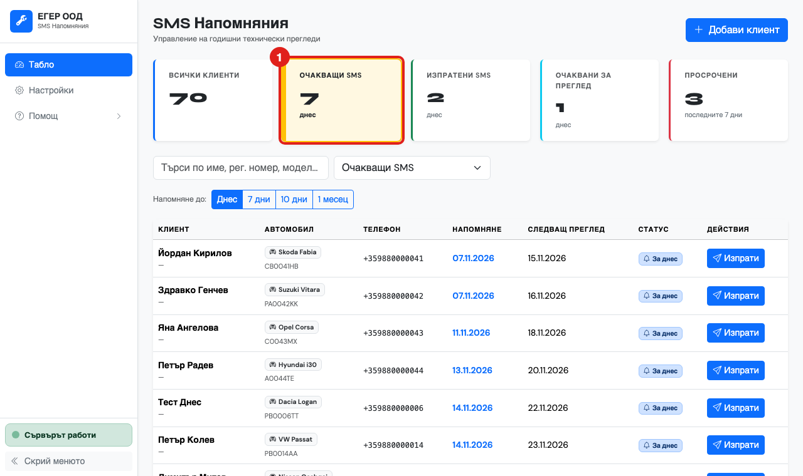
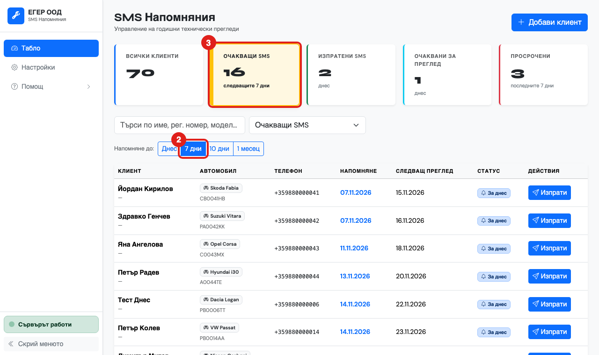
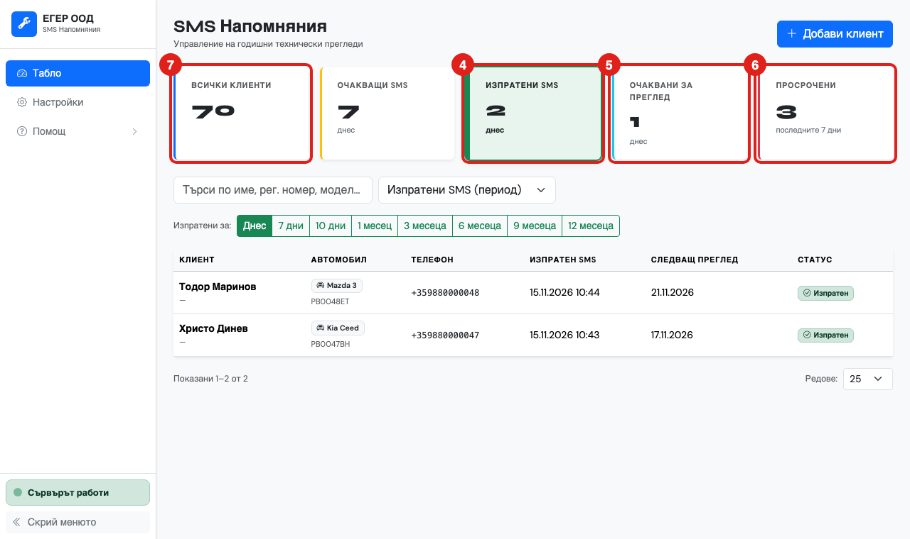

За печат или PDF: натиснете Ctrl + P
Кой трябва да получи SMS днес
Петте карти горе са бутони. Щракнете карта и под нея се показват нейните клиенти.
Числото в картата е броят на тези клиенти. Под числото пише за кой период е.
Вижте кой чака SMS днес

- Всяка сутрин щракнете картата Очакващи SMS. 1
Картата светва. В таблицата са клиентите, на които трябва да пратите SMS днес. Как се праща: тема 1.Пропуснахте ден? Клиентът остава в този списък, докато не пратите SMS или прегледът му не изтече.
Пратете по-рано, преди почивни дни

- Над таблицата, до „Напомняне до:“, щракнете 7 дни. 2
Има още „10 дни“ и „1 месец“. Изберете толкова дни, колкото няма да работите.
- Погледнете картата. Числото е по-голямо. Под него пише „следващите 7 дни“. 3
В списъка са и клиентите, чийто ден за SMS идва в следващите 7 дни.
- Пратете SMS на всеки клиент от списъка (тема 1).
SMS-ът пише истинската дата, на която изтича прегледът. Затова текстът е верен и когато е пратен по-рано.
Другите карти

- Щракнете Изпратени SMS, за да видите на кого сте пратили SMS днес. 4
Колоната „Изпратен SMS“ показва деня и часа. Най-новите са горе. С бутоните над таблицата виждате и по-стари: до 12 месеца.
- Щракнете Очаквани за преглед, за да видите кой трябва да дойде днес. 5
Тук са само клиентите, които са получили SMS. С бутоните над таблицата виждате и следващите 7, 10 или 30 дни.
- Щракнете Просрочени, за да видите кой не е дошъл. 6
Показва клиентите, чийто преглед е изтекъл в последните 7 дни. Повече: тема 6.
- Щракнете Всички клиенти, за да видите пак всички. 7
Или щракнете още веднъж картата, която свети.
Какво значи статусът в таблицата
- За днес
- Денят за SMS е днес или е минал. Пратете SMS.
- Очаква
- Денят за SMS още не е дошъл. Не правете нищо.
- Изпратен
- SMS е пратено. Чакаме клиента за преглед.
- Просрочен
- Прегледът е изтекъл, а нова дата няма. SMS не се праща. Тема 6.
Готово. Какво стана?
- Картите и бутоните само показват. Те не променят нищо и не пращат SMS.
- Избраният период остава, докато не презаредите страницата (F5). После картите пак показват „днес“, а „Просрочени“ — „последните 7 дни“.
Ако нещо не стане
- Картата показва 0, а знам, че има клиент.
- Погледнете периода под числото. Щракнете картата и изберете по-дълъг период.
- Списъкът е празен, а картата показва число.
- В полето „Търси…“ има текст. Изтрийте го.
- Няма бутон „Изпрати“.
- Бутонът е само в картата „Очакващи SMS“.